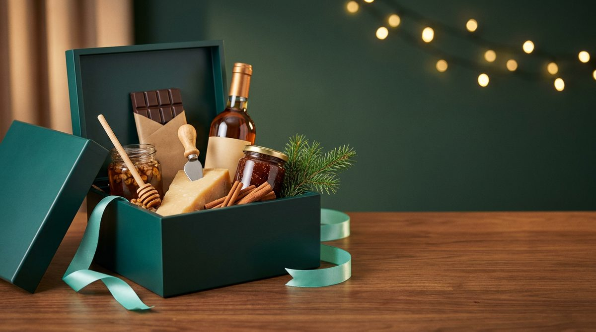
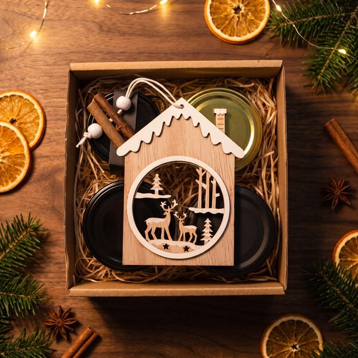
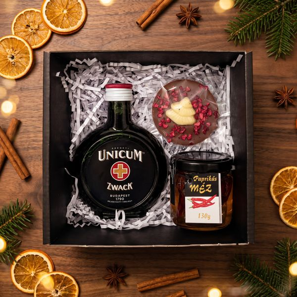
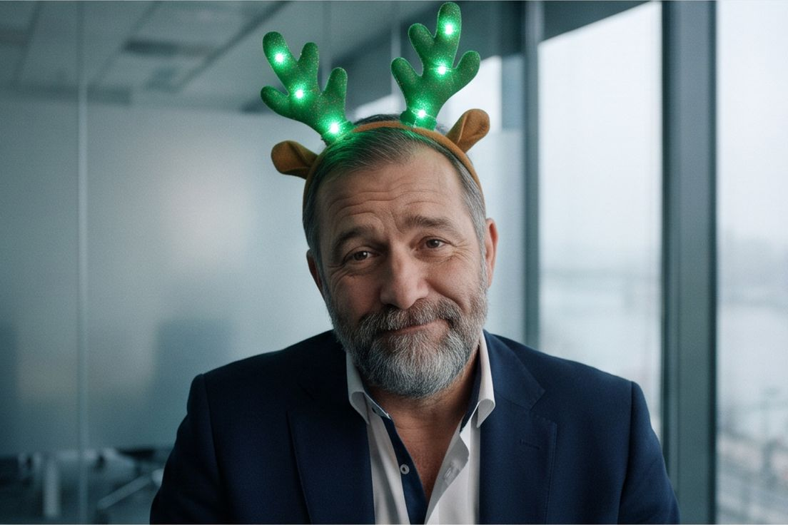

|
Nem jól jelenik meg? Nyissa meg a böngészőben
| Rendelés december 5-ig · kiszállítás december 18-ig |

Gourmet vs Office · karácsonyi mini-sorozat
|  |
| |
Gourmet vs Office · 1. rész Ezt nem kell leereszteni. Elég kibontani. |
| A rénszarvasKedves {{FirstName|default("Partnerünk")}}! Minden irodában van egy fiók, ahová a karácsonyi ajándékok mennek meghalni. A táncoló Mikulás, a villogó agancs, az éneklő hal. Senki nem kérte őket, mindenki megkapta, és januárban mind ugyanott végzik. Erről készítettünk egy rövid irodai sorozatot. Az első rész: |
|
|
Vida Dóra · junior marketinges |
„Még mindig ott van. Nem tudjuk leereszteni.” Dóra mindent azonnal kibont. Idén ezt megbánta: egy lapos csomagból háromméteres felfújható rénszarvas lett, ellepte a tárgyalót, és Laci bácsi, a raktárvezető alatta rekedt. A feladó egy lelkes beszállító, aki minden évben ilyet küld. A rénszarvas azóta is ott van. | Office vs Gourmet|
Office Táncoló Mikulás, villogó agancs, éneklő hal, háromméteres felfújható rénszarvas. Januárra: a fiókban. |
| |
Gourmet Méz, kézműves csokoládé, bor, mézespuszedli, céges logóval díszdobozban. Januárra: elfogyott, és mindenki emlegeti. |
|
Rénszarvas helyett: amit az iroda megeszik
 |
|
A kamra illata SzilvaMéz Szilvás-fahéjas tea, hársméz és mézespuszedli: az az illat, amitől decemberben mindenki otthon érzi magát.
nettó 7 549 Ft / db
Megnézem →
| |
 |
|
Délután háromkor Délutáni csipegetős Karamellkrém, áfonyalekvár és sós mandula a délutáni holtpontokhoz, ami mindenkinek ismerős helyzet.
nettó 7 720 Ft / db
Megnézem →
| |
 |
|
Egy korty Budapest Téli Ízutazás Unicum, málnás csokikorong és paprikás méz: kicsi doboz, amiről az egész iroda beszél.
nettó 6 243 Ft / db
Megnézem →
| |
|
|
A sorozat megmentője Réka, az irodavezető minden rész végén hozza a zöld dobozt. Ő rendeli az ajándékokat, és idén nem a fióknak rendel. |
|
 |
Jövő kedden · 2. rész Az agancs Péter, a kulcspartner, három órán át tárgyal egy villogó agancsban. Senki nem szól neki. |
| |
tomexgourmet.hu
A fiók helyett az asztalra
Tíz kiemelt csomag logóval, egy számlával, akár minden kollégának külön címre.
| Csomagtervező
Egyik csomag sem az igazi? Rakja össze a sajátját.
A Csomagtervezőben termékenként válogathat: Ön választja a tartalmat, a dobozt és az üdvözlőkártyát, mi logózzuk, csomagoljuk és kiszállítjuk.
|
Ui.: A rénszarvas és a szereplők kitaláltak. A fiók sajnos nem. | tomex.hu · logózott ajándékok Nem csak gourmet csomag: logózott karácsonyi ajándékok Ha a kollégáknak vagy a partnereknek céges logós karácsonyi ajándékot keres, a Tomex weboldalán abból is válogathat. |
| |
Céges logóval Doboz, kártya, termék |
Egy számla Akár több címre szállítva |
Budapesti raktár Itt csomagolunk, innen szállítunk |
December 18-ig kiszállítás, ha december 5-ig rendel |
|

Tomex Group Kft. · Citypoint D6 raktár, Fegyvergyár utca 7., 1097 Budapest
+36 30 868 2914 · info@tomexgourmet.hu · tomexgourmet.hu
Ezt a levelet azért kapja, mert a Tomex ügyfele, vagy feliratkozott a hírlevelünkre. Leiratkozás
|
|